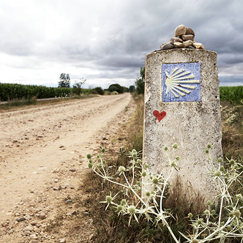
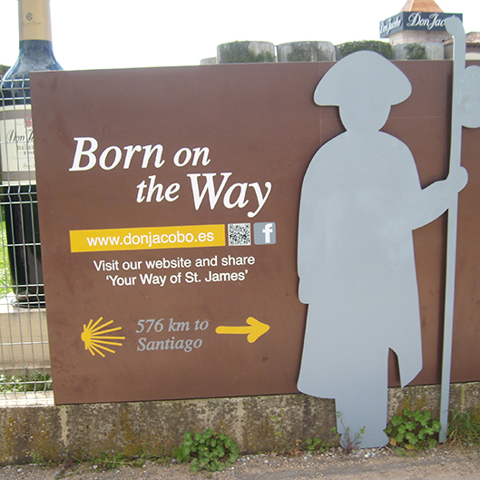
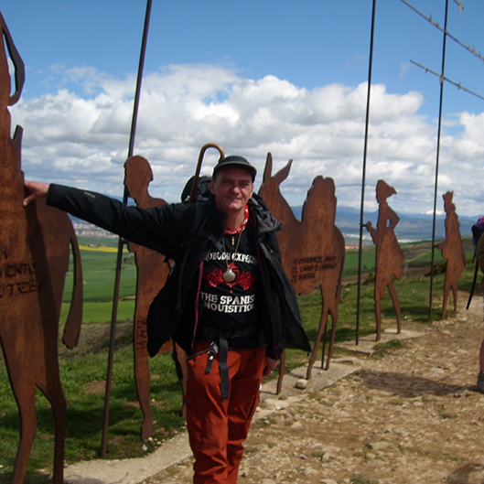
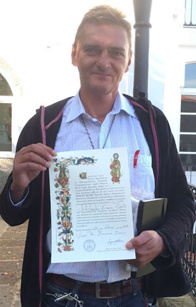

De weg naar Santiago de Compostella
Info
In het jaar 2015 kwam ik op het idee om een bedevaart te doen. Ik had tijd voor mezelf nodig, moest ertussen uit. Had bezinning nodig. Bijna automatisch wilde ik naar Santiago de Compostella wandelen. Na wat zoekwerk kwam ik aan bij de website van het Vlaams Compostellagenootschap. Ik heb me toen lid laten maken van deze vereniging, en begon met de voorbereiding van de tocht. Op hun website was alles te vinden om me goed voor te bereiden.
Er bestaan verschillende routes naar Santiago. De meest bekende en gelopen route is de Camino Françes, vertrekkend uit Saint-Jean-pieds-de-Port aan de Franse kant van de Pyreneeën. Ik besloot die route te kiezen. Maar in principe kan men vanuit
de hele wereld vertrekken naar Santiago, wat sommigen ook doen. In de hele Christelijke wereld staan er tientallen kerken geweid aan Sint Jakobus. In de buurt van die kerken vind men regelmatig op de grond een afbeelding van de sint jacobsschelp.
 Alle wegen leiden naar Rome zegt men, maar ook alle wegen leiden naar Santiago de Compostella. Vanuit Lissabon neemt men de Camino Portugues, richting Noord Spanje. Vanuit
Bilbao kan men de Camino del Norte nemen. Er zijn er die in Madrid vertrekken, of vanuit hun eigen woonplaats. Mijn neef, die overleden is, heeft de Camino gelopen samen met zijn vrouw en twee kleine kinderen, en hij was vertrokken in Italië.
Alle wegen leiden naar Rome zegt men, maar ook alle wegen leiden naar Santiago de Compostella. Vanuit Lissabon neemt men de Camino Portugues, richting Noord Spanje. Vanuit
Bilbao kan men de Camino del Norte nemen. Er zijn er die in Madrid vertrekken, of vanuit hun eigen woonplaats. Mijn neef, die overleden is, heeft de Camino gelopen samen met zijn vrouw en twee kleine kinderen, en hij was vertrokken in Italië.
Ik heb een Rooms-Katholieke opvoeding gehad, dus was het vanzelfsprekend dat ik een "Geloofsbrief" zou meenemen. Deze brief getuigd dat men Katholiek is, gedoopt en gevormd, en werd soms vereist om te overnachten in bepaalde herbergen. In de praktijk heb ik dit document nooit nodig gehad.
Ook de uitrusting vergde wat tijd om samen te stellen. Een goede uitrusting is niet goedkoop. Goede schoenen en kousen is heel belangrijk. Dan de kleding die je gaat aandoen, want je moet jezelf beperken tot drie t-shirts en één trui. Als t-shirts had ik gewone t-shirts gekozen, met een Monty Python referentie erop. Eentje was 'No one expects the Spanish inquisition', 'Always look on the bright side of life', wat wel goed aankwam in Spanje zelf. Van mijn tante had ik een goede fleece trui gekregen, wat onontbeerlijk bleek, voor de afwisselende temperaturen wandelend door Spanje. Je voeten verzorgen is ook heel belangrijk. Van iemand die de Camino al gelopen had, had ik de tip gekregen om aloe vera zalf te gebruiken voor mijn voeten, elke dag goed insmeren voor je begint te wandelen, een dikke klodder op je zolen. Heel de weg heb ik geen enkele blaar gehad daardoor.
Je kan maar ongeveer tien kilo op je rug dragen, meer kost teveel energie. Dat wil zeggen dat je enkel meeneemt wat echt van pas kan komen. Ik had twee kleine zakjes gevuld, met een varia van naaigerief, pleisters, ontsmettingsmiddel voor eventuele blijnen, een opgerold touw, veiligheidspelden, een nagelknipper, ... Natuurlijk had ik een zakmes bij, eentje dat ik als souvenir had meegebracht van Brazilië, made in China. Bij het Compostellagenootschap had ik een stempelboekje gekregen, om in de verschillende herbergen en kerken te laten afstempelen, om te getuigen dat je de weg had afgelegd.
Gepakt en gezakt ben ik dan thuis vertokken. Eerst naar de luchthaven, het vliegveld naar Bordeaux genomen. Daar een nacht geslapen in een AirBnB, en de dag daarna de TGV genomen tot in Saint-Jean-Pieds-de-Port, aan de Franse zijde van de Pyreneeën. Mijn eerste ervaring van een pelgrimsherberg en bijkomende herbergier was heel positief. De herbergier kon lekker koken, en de herberg was gelegen in een oud, middeleeuws pand. Van daaruit ben ik 's morgens vertrokken op mijn geplande ontdekkingsreis. Een andere pelgrim uit Canada was 's nachts op me aan het vloeken, toen ik me klaarmaakte. Ik maakte teveel lawaai, en daarbij kraakten de treden van de herberg heel hard. In de loop van de eerste dag, kwam deze pelgrim uit de herberg mij vrolijk voorbijsteken, duidelijk een geoefende wandelaar. Hij verontschuldigde zich voor zijn gevloek, en zei: "We're all friends on the Camino". Uit mijn verdere ervaringen onderweg bleek dat hij volmondig gelijk had. De eerste dag was stijl omhoog! Wat een klim, met tien (toen nog twaalf) kilogram op je rug. En wat een gevoel als je uiteindelijk boven bent geraakt, net Rocky die bovenaan de trappen staat, met de muziek van 'Eye of the tiger'.  De tweede nacht was in een authentiek klooster, dat tot grote herberg omgevormd was. Hier kwam ik al enkele pelgrims tegen waarmee ik 's morgens vertrokken was. De dag daarop was de bestemming Pamplona, bekend om de stierenloop, en van de schrijver Hemmingway, die in die stad ooit een tijdje is blijven pleisteren. De herberg werd uitgebaat door Duitsers, en 's morgens werden we gewekt met klassieke muziek.
Vanaf de eerste dag tot de laatste wordt je als pelgrim steeds begroet met 'Buen Camino' of goede reis. De sfeer tussen de pelgrims onderling is er een van kameraadschap. Als Belg ken je je talen, dus is communiceren met andere pelgrims niet zo moelijk. Het liefst koos ik een herberg met 'cochina' of 'keuken', zo kon ik zelf iets te eten maken, wat scheelde in de prijs. Trouwens, alleen eten of koken doe je niet onderweg. Men kookt voor elkaar. Samen klaarmaken, en samen opeten, geeft veel meer voldoening dan op je eentje te moeten eten. En de wijn vloeide ook vrolijk elke avond. In Spanje is de wijn goedkoop maar van goede kwaliteit. Ze moeten er namelijk maar weinig belastingen op betalen.
Een verblijf in een herberg kost meestal tien euro voor een overnachting, wat heel schappelijk is, als je weet wat je betaalt in een hotel of bed and breakfast. Avondeten in een pelgrimsrestaurant komt ook op ongeveer tien euro voor een voorgerecht, hoofdgerecht en dessert. Dit heb ik zo weinig mogelijk gedaan, omdat ik een trage eter ben. In Spanje moet het namelijk vooruit gaan, en brengen ze het hoofdgerecht al aan, vlak nadat je je voorgerecht op hebt. Mijn maag is daar te lui voor. Maar voedsel is belangrijk om te kunnen blijven wandelen. Door de dag at ik 'platanas' of bananen, heel voedzaam en goedkoop. Of ik at een tortilla, een eierpannenkoek met ui en aardappel. Of een 'boccadillo', Spaans voor broodje.
Maar het blijft een bedevaart, en de herbergier verwacht dat iedereen de herberg verlaten heeft naar zijn volgende bestemming voor negen uur 's morgens. Dus niet uitslapen, maar vroeg uit de veren en terug op pad. Elke avond ga je slapen met pijnlijke voeten. Maar 's morgens is de pijn geminderd, en denk je bij jezelf, komaan, er terug voor gaan. Als je echter nood had aan een rustdag (minstens één elke week), kon je aan de herbergier vragen of je een dagje extra kon blijven. Die dag werd gebruikt om de omgeving te verkennen, of je klederen te wassen, of iets op de post doen, die meestal maar een uur op een dag open is.  En onderweg kom je de wereld tegen. Je ontmoet pelgrims van overal in de wereld. Ook uit het verre oosten kwam men naar Spanje om te wandelen. Ik heb een Japanse man ontmoet, Mr. Honda, die al tachtig jaar was, en enkele dagen achter elkaar kwam ik hem in de volgende herberg tegen, steeds was hij al lang voor mij aangekomen. Ook zie je veel Koreanen op de weg, naar het schijnt krijgen ze subsidies van de staat om de Camino te lopen. Dat vind ik een goede zaak, want de Camino verandert je. Al die kilometers door het Spaanse gevarieerde landschap dat doet iets met je. De samenhorigheid die er is tussen de pelgrims onderling toont je wat het is om een echte Christen te zijn. Zelfs het kleinste papiertje weggooien, of een sigarettenpeuk op de Camino is 'not done'. Zwerfvuil kom je onderweg zo goed als niet tegen. Je leert de natuur te respecteren, en ook je medepelgrims. Iedere pelgrim legt de weg af met een reden. Soms praat je erover met elkaar, sommige pelgrims zijn op zichzelf gefocust, en wandelen liever alleen, zonder storende geluiden van andere pelgrims, of er zijn er die durven een draagbare radio mee te sleuren op de Camino, wat sommigen een verkrachting vinden van waar de Camino voor staat. Voor dezen is dit uit den boze, verstoren van de rust van de natuur.
Zo legde ik tenminste twintig kilometer per dag af dat ik wandelde. Soms al eens wat meer, zelden of nooit minder dan mijn streefdoel, twintig kilometer per dag. Maar ieder doet het op zijn eigen tempo. In Saint-Jean-Pieds-de-Port werd mijn stempelboekje voor het eerst afgestempeld, en de dame in kwestie maakte een klein tekeningkje van een slak erbij. Het is geen race. Onderweg paste ik altijd op dat ik niet per ongeluk op een slak trapte, want die staken regelmatig het wandelpad over.
Zo trek je van dorp naar dorp, van stad naar stad. Men kan zijn bagage vooruit sturen met de post naar de volgende herberg, maar dat vond ik een beetje valsspelen, dus deze slak had zijn huishouden op zijn rug. Men kan ook een taxi nemen, als men te moe wordt. Ook daar heb ik mij niet aan bezondigd. In totaal heb ik veertig dagen gewandeld. In veertig dagen niet rond de wereld, maar toch door Noord Spanje, met zijn diverse landschappen, bergen en dalen, riviertjes en stromen. En hoe dichter Santiago nabij kwam, hoe meer ik probeerde te genieten van de momenten onderweg. Mensen die maar het laatste stuk van de Camino lopen (om vergeving te krijgen van gedane zonden volstaat het om de laatste 100 kilometer te voet af te leggen, of 400 kilometer met de fiets of paard), zie je als het ware op het einde voorbij racen. Zij die heel wat meer kilometers achter de rug hadden, gingen een tempo trager.
Aankomen in Santiago na 800 kilometer te voet hebben afgelegd is ook een verademing. Ook is dan Santiago de stad waar men medepelgrims die je op je weg hebt tegengekomen, terug te ontmoeten. Natuurlijk neem je dan ook deel aan de pelgrimsmis, er is er één tweemaal per dag. Het indrukwekkendste is het wierrookvat. Een groot vat wordt aangestoken en rond in de kerk gezwierd door een katrol. De wierrook had ook een speciaal effect op je. Moeilijk te beschrijven, maar het is een unieke ervaring. Santiago is ook een mooie stad, waar de architectuur van de gebouwen je overweldigd. Ook ben ik te biechten geweest, want al die tijd alleen doet je nadenken over het leven dat je al geleid hebt.

Als beloning en bewijs dat je de weg hebt afgelegd, kan je dan in de stad een 'Compostella-certificaat' verkrijgen. Je stempelboekje wordt nagekeken of er geen grote gaten zijn, of dat je duidelijk teveel de taxi genomen hebt. Een mooi document, opgemaakt in het Latijn, wordt je overhandigd. Je kan je naam er in het Latijn laten opzetten, wat ik ook gedaan heb. En dan is het kuieren in de stad tot het tijd is om op de bus te springen naar huis. Aan alles komt een einde. Mijn 'Compostella' heeft een mooie plaats gekregen aan de muur, samen met de stempelboekjes, en de bijhorende Sint Jakobsschelp, het herkenningsmiddel van de pelgrim naar Santiago de Compostella.